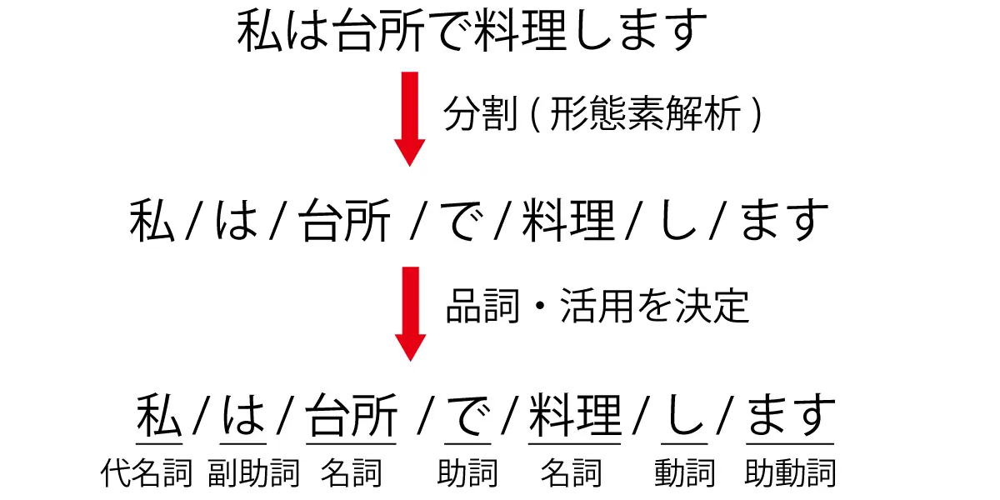

自然言語処理の基礎
Contents
自然言語処理の基礎#
コーパス#
コーパスとは#
「コーパス（Corpus）」とは、自然言語の文章や使い方を大規模に収集し、コンピュータで検索できるよう整理されたデータのことです。
コーパスが大きく「ラベル付きコーパス」と「ラベルなしコーパス」に分けられます。
ラベルなしコーパス: 注釈付けを行わずにテキストを集めただけのコーパス。例えば、スクリーンスクレイピングによる取得するウェブベージの生テキストデータ。
ラベル付きコーパス: ラベル付きコーパスとは、テキストに付加情報（ラベルや注釈）が付与されているコーパスのことを指します。このラベルは、特定のタスクや研究の目的に応じてデータに追加されます。
品詞タグ付きコーパス: 各単語に品詞（名詞、動詞、形容詞など, part of speech）のタグが付けられています。これは、文法的構造の理解や、品詞タガーの訓練データとして使用されます。
固有名詞抽出のためのコーパス: テキスト内の固有名詞（人名、地名、組織名など）に対して、該当するラベルが付けられています。
<sentence>
<LUW B="B" SL="v" l_lemma="公共工事請け負い金額" l_lForm="コウキョウコウジウケオイキンガク" l_wType="混" l_pos="名詞-普通名詞-一般" >
<SUW lemma="公共" lForm="コウキョウ" wType="漢" pos="名詞-普通名詞-一般" pron="コーキョー">
公共
</SUW>
<SUW lemma="工事" lForm="コウジ" wType="漢" pos="名詞-普通名詞-サ変可能" pron="コージ">
工事
</SUW>
<SUW lemma="請け負い" lForm="ウケオイ" wType="和" pos="名詞-普通名詞-一般" pron="ウケオイ">
請負
</SUW>
<SUW lemma="金額" lForm="キンガク" wType="漢" pos="名詞-普通名詞-一般" pron="キンガク">
金額
</SUW>
</LUW>
<LUW SL="v" l_lemma="の" l_lForm="ノ" l_wType="和" l_pos="助詞-格助詞" >
<SUW lemma="の" lForm="ノ" wType="和" pos="助詞-格助詞" pron="ノ">の</SUW>
</LUW>
<LUW B="B" SL="v" l_lemma="動き" l_lForm="ウゴキ" l_wType="和" l_pos="名詞-普通名詞-一般" >
<SUW lemma="動き" lForm="ウゴキ" wType="和" pos="名詞-普通名詞-一般" pron="ウゴキ">
動き
</SUW>
</LUW>
（略）
</sentence>
コーパスの読み込み#
多くのコーパスは、txt,csv,tsv, jsonフォーマットで格納されていますので、pythonでこれらのファイルを読み込む方法について紹介します。
ファイル読み込みの基礎#
読み込み・書き込みいずれの場合も組み込み関数open()でファイルを開きます。
第一引数に指定したパス文字列が示すファイルオブジェクトが開かれます。
引数
modeをrとすると読み込みモードでファイルが開かれます。デフォルト値はrなので省略してもよい。テキストファイル読み込み時のデコード、書き込み時のエンコードで使われるエンコーディングは引数
encodingで指定する。日本語環境で使われるものとしてはcp932,euc_jp,shift_jis,utf_8などがあります。
with open("./Data/corpus.txt",mode="r",encoding="utf-8") as f:
s = f.read()
print(s)
この商品はとても素晴らしい。
残念ながら、私の期待を下回る製品でした。
非常に使いやすく、価格も手頃。おすすめです！
この商品には全く魅力を感じませんでした。
readlines()メソッドで、ファイル全体を行ごとに分割したリストとして取得できます。
with open("./Data/corpus.txt",mode="r",encoding="utf-8") as f:
s = f.readlines()
for i in s:
print(i)
print("-----------")
この商品はとても素晴らしい。
-----------
残念ながら、私の期待を下回る製品でした。
-----------
非常に使いやすく、価格も手頃。おすすめです！
-----------
この商品には全く魅力を感じませんでした。
-----------
csvファイルとtsvファイルの読み込み#
csvは、値がカンマで区切られたファイル形式です。
tsvは、値がタブで区切られたファイル形式です。
ファイルの読み込みは、Pandasを使って行うことがでします。
pd.read_csv("example.csv", encoding ="uft-8")
jsonファイルの読み込み#
JSONは、構造化されたデータをテキスト形式で表現するためのフォーマットです。
[
{
"id": 1,
"name": "Taro Yamada",
"age": 25,
"city": "Tokyo"
},
{
"id": 2,
"name": "Hanako Tanaka",
"age": 30,
"city": "Osaka"
},
{
"id": 3,
"name": "Jiro Suzuki",
"age": 35,
"city": "Kyoto"
}
]
Pandasのread_jsonメソッドを使って読み込めます。
特に、改行で区切られたJSONファイルはjsonlで呼ばれます。
{"id": 1, "name": "Taro Yamada", "age": 25, "city": "Tokyo"}
{"id": 2, "name": "Hanako Tanaka", "age": 30, "city": "Osaka"}
{"id": 3, "name": "Jiro Suzuki", "age": 35, "city": "Kyoto"}
jsonl形式のファイルを読み込むには、read_jsonメソッドのlines引数にlines=Trueを設定する必要があります。
テキストの前処理#
正規表現によるノイズの除去#
テキストから不要な情報やノイズを取り除き、解析や処理を行いやすくするための前処理が不可欠になります。
テキストクリーニングを行う際に、正規表現を利用すると非常に柔軟にノイズの除去が可能です。以下、いくつかの一般的なケースを例に、テキストからノイズを除去する方法を紹介します。
import re
#ウェブページやSNSのテキストからURLを取り除く場合:
text = "この記事はhttp://example.com に投稿されました。"
cleaned_text = re.sub(r'http\S+', '', text)
print(cleaned_text)
この記事は に投稿されました。
# HTMLタグの除去: HTMLコンテンツからタグを取り除く場合:
text = "今日は2023年9月16日です。"
cleaned_text = re.sub(r'\d', '', text)
print(cleaned_text)
今日は年月日です。
#テキストからアルファベットのみを取り除く場合:
text = "これはテストtextです。"
cleaned_text = re.sub(r'[a-zA-Z]', '', text)
print(cleaned_text)
これはテストです。
トークン化#
コンピュータは、入力として生の文字列を受け取ることができません。その代わりに、テキストがトークン化され、数値ベクトルとしてエンコードされていることが想定しています。
トークン化は、文字列をモデルで使用される最小単位に分解するステップです。
日本語は英語などとは異なり、単語の間に（スペースなどの）区切りをつけないので、文から単語を取り出すこと自体が一つのタスクとなります。文から単語（正確には形態素と呼ばれる意味の最小単位）を取り出す解析を形態素解析といいます。
イメージとしては以下のように分割します。
分かち書き（文章を形態素で分ける）
品詞わけ（名詞や動詞などに分類する）
原型付与（単語の基本形をだす） 例：食べた ⇒ 食べる、た

日本語の形態素解析ツールとしては、MeCabやJUMAN++、Janomeなどが挙げられます。ここでは、MeCabを使って形態素解析をしてみましょう。
初めてMeCabを使う場合、!が付いたコードをJupyter Notebookで実行するか、!を除去したコードをターミナルで実行し、MeCabを導入してください。
!pip install mecab-python3 # mecab-python3のインストール
!pip install unidic
!python -m unidic download # 辞書のダウンロード
結果を確認すると、単語に分割されていますが、デフォルトの設定では新語に対する解析は強くないことがわかります。
# !pip install mecab-python3 # mecab-python3のインストール
# !pip install unidic
# !python -m unidic download # 辞書のダウンロード
import MeCab
import unidic
tagger = MeCab.Tagger()
print(tagger.parse("友たちと国立新美術館に行った。"))
友 名詞,普通名詞,一般,,,,トモ,友,友,トモ,友,トモ,和,"","","","","","",体,トモ,トモ,トモ,トモ,"1","C3","",7324130487706112,26645
たち 接尾辞,名詞的,一般,,,,タチ,達,たち,タチ,たち,タチ,和,"タ濁","基本形","","","","",接尾体,タチ,タチ,タチ,タチ,"","C3","",6149852035686912,22373
と 助詞,格助詞,,,,,ト,と,と,ト,と,ト,和,"","","","","","",格助,ト,ト,ト,ト,"","名詞%F1,動詞%F1,形容詞%F2@-1","",7099014038299136,25826
国立 名詞,普通名詞,一般,,,,コクリツ,国立,国立,コクリツ,国立,コクリツ,漢,"","","","","","",体,コクリツ,コクリツ,コクリツ,コクリツ,"0","C2","",3460171716239872,12588
新 接頭辞,,,,,,シン,新,新,シン,新,シン,漢,"","","","","","",接頭,シン,シン,シン,シン,"","P2","",4736429838180864,17231
美術 名詞,普通名詞,一般,,,,ビジュツ,美術,美術,ビジュツ,美術,ビジュツ,漢,"","","","","","",体,ビジュツ,ビジュツ,ビジュツ,ビジュツ,"1","C1","",8801049481716224,32018
館 接尾辞,名詞的,一般,,,,カン,館,館,カン,館,カン,漢,"","","","","","",接尾体,カン,カン,カン,カン,"","C3","",2056095367569920,7480
に 助詞,格助詞,,,,,ニ,に,に,ニ,に,ニ,和,"","","","","","",格助,ニ,ニ,ニ,ニ,"","名詞%F1","",7745518285496832,28178
行っ 動詞,非自立可能,,,五段-カ行,連用形-促音便,イク,行く,行っ,イッ,行く,イク,和,"","","","","","",用,イッ,イク,イッ,イク,"0","C2","",470874511778436,1713
た 助動詞,,,,助動詞-タ,終止形-一般,タ,た,た,タ,た,タ,和,"","","","","","",助動,タ,タ,タ,タ,"","動詞%F2@1,形容詞%F4@-2","",5948916285711019,21642
。 補助記号,句点,,,,,,。,。,,。,,記号,"","","","","","",補助,,,,,"","","",6880571302400,25
EOS
この問題は形態素解析器に辞書を追加することである程度解決することが出来ます。特に、NEologdという辞書には、通常の辞書と比べて多くの新語が含まれています。
sample_txt = "友たちと国立新美術館に行った。"
path = "-d /opt/homebrew/lib/mecab/dic/mecab-ipadic-neologd"
m = MeCab.Tagger(path)
print("Mecab ipadic NEologd:\n",m.parse(sample_txt))
Mecab ipadic NEologd:
友 名詞,一般,*,*,*,*,友,トモ,トモ
たち 名詞,接尾,一般,*,*,*,たち,タチ,タチ
と 助詞,並立助詞,*,*,*,*,と,ト,ト
国立新美術館 名詞,固有名詞,一般,*,*,*,国立新美術館,コクリツシンビジュツカン,コクリツシンビジュツカン
に 助詞,格助詞,一般,*,*,*,に,ニ,ニ
行っ 動詞,自立,*,*,五段・カ行促音便,連用タ接続,行く,イッ,イッ
た 助動詞,*,*,*,特殊・タ,基本形,た,タ,タ
。 記号,句点,*,*,*,*,。,。,。
EOS
dataset.set_format("pandas")
data= dataset["train"][:]
data
---------------------------------------------------------------------------
NameError Traceback (most recent call last)
Cell In[8], line 1
----> 1 dataset.set_format("pandas")
2 data= dataset["train"][:]
3 data
NameError: name 'dataset' is not defined
data["text"][0]
'普段使いとバイクに乗るときのブーツ兼用として購入しました。見た目や履き心地は良いです。 しかし、２ヶ月履いたらゴム底が削れて無くなりました。また、バイクのシフトペダルとの摩擦で表皮が剥がれ、本革でないことが露呈しました。ちなみに防水とも書いていますが、雨の日は内部に水が染みます。 安くて見た目も良く、履きやすかったのですが、耐久性のなさ、本革でも防水でも無かったことが残念です。結局、本革の防水ブーツを買い直しました。'
Pythonにとるテキストクリーニングについて、テキストクリーニングの必要性を説明し、正規表現を使ったノイズの除去を例を挙げなから説明してください